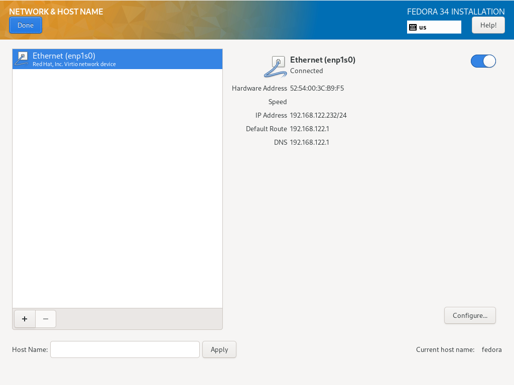
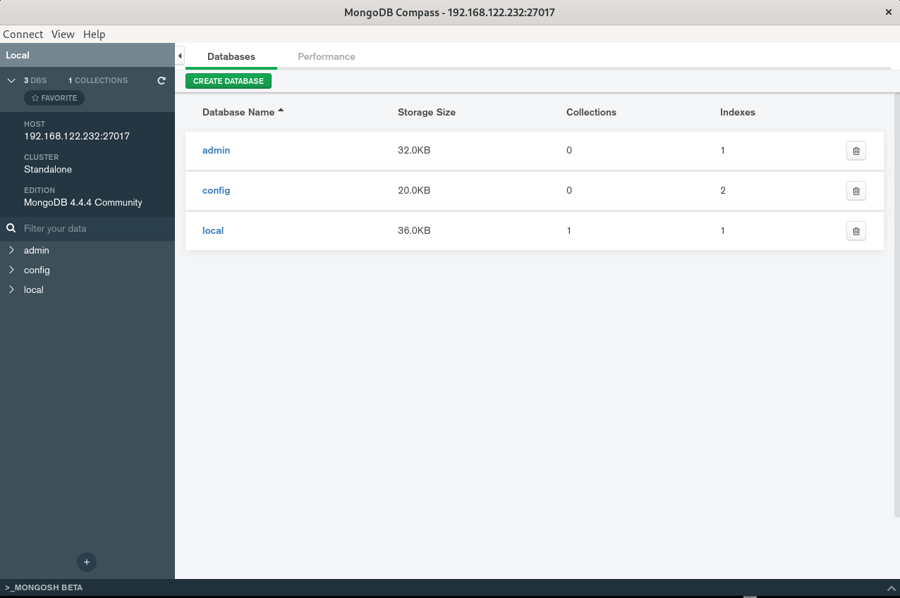

Mongo Training
Install VM
- OS : Fedora 34 Server
- Cpu: 2 sockets
- Ram: 2048 MB
- Disk: 20 GB (LVM)
- Network: NAT & Bridge
Disk

Network

Settings

Finished

Keyboard & SSH & Repo & FireWall Ayarları
Keyboard:
localectl set-keymap tr
SSH:
vi /etc/ssh/sshd_config
#PermitRootLogin prohibit-password
PermitRootLogin Yes
Repo:
vi /etc/yum.repos.d/mongodb.repo
[mongodb]
name=MongoDB Upstream Repository
baseurl=https://repo.mongodb.org/yum/redhat/8Server/mongodb-org/4.4/x86_64/
gpgcheck=1
enabled=1
gpgkey=https://www.mongodb.org/static/pgp/server-4.4.asc
systemctl restart sshd
Install MongoDB
yum install -y mongodb-org mongodb-org-tools mongodb-org-shell
SELinux and FirewallD
Security-Enhanced Linux
vi /etc/selinux/config
#SELINUX=enforcing
SELINUX=disabled
systemctl stop firewalld.service
systemctl disable firewalld.service
Start MongoDB
sudo systemctl enable mongod.service
sudo systemctl start mongod.service
[root@fedora ~]# mongod --version
db version v4.4.4
Build Info: {
"version": "4.4.4",
"gitVersion": "8db30a63db1a9d84bdcad0c83369623f708e0397",
"openSSLVersion": "OpenSSL 1.1.1k FIPS 25 Mar 2021",
"modules": [],
"allocator": "tcmalloc",
"environment": {
"distmod": "rhel80",
"distarch": "x86_64",
"target_arch": "x86_64"
}
}
Configure
[root@fedora ~]# cat /etc/mongod.conf
# mongod.conf
# for documentation of all options, see:
# http://docs.mongodb.org/manual/reference/configuration-options/
# where to write logging data.
systemLog:
destination: file
logAppend: true
path: /var/log/mongodb/mongod.log
# Where and how to store data.
storage:
dbPath: /var/lib/mongo
journal:
enabled: true
# engine:
# wiredTiger:
# how the process runs
processManagement:
fork: true # fork and run in background
pidFilePath: /var/run/mongodb/mongod.pid # location of pidfile
timeZoneInfo: /usr/share/zoneinfo
# network interfaces
net:
port: 27017
bindIp: 0.0.0.0 # Enter 0.0.0.0,:: to bind to all IPv4 and IPv6 addresses or, alternatively, use the net.bindIpAll setting.
#security:
#operationProfiling:
#replication:
#sharding:
## Enterprise-Only Options
#auditLog:
#snmp:
mongod --config /etc/mongod.conf
Mongo Compass


